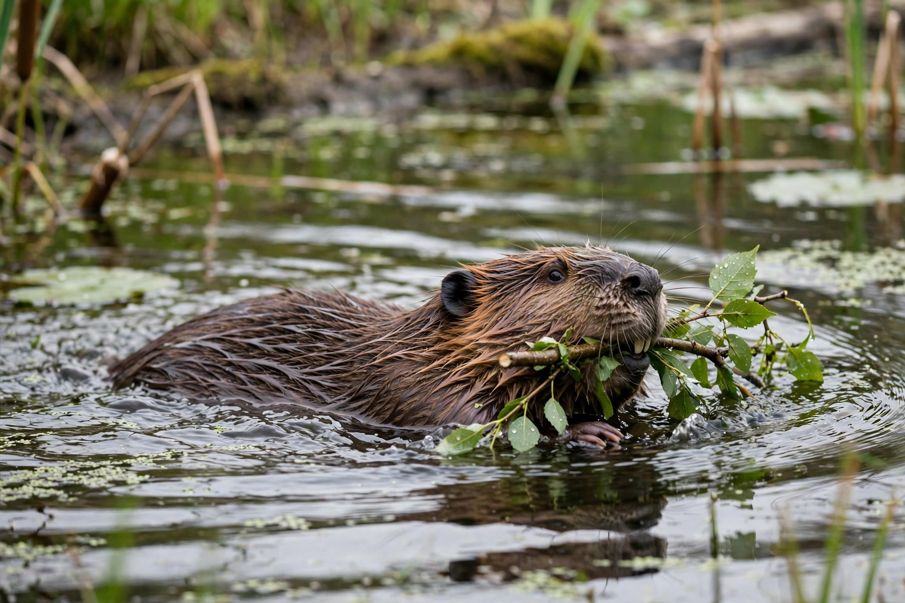

Beaver

Beavers (genus Castor) are large, semiaquatic rodents of the Northern Hemisphere. Two species survive: the North American beaver (Castor canadensis) and the Eurasian beaver (Castor fiber). Beavers are famous for building dams, canals and lodges, for which they fell trees with powerful, ever-growing incisor teeth; they are among the few animals, besides humans, that substantially engineer their environment.
| Kingdom | Animalia |
|---|---|
| Order | Rodentia |
| Family | Castoridae |
| Genus | Castor |
| Species | C. canadensis; C. fiber |
| Size | 11–30 kg; body 60–90 cm plus tail |
Characteristics
Beavers have stout bodies, webbed hind feet, and a broad, flat, scaly tail used as a prop, a rudder and an alarm signal when slapped on water. Transparent eyelids, closable ears and nostrils, and lips that seal behind the incisors let them carry branches underwater. Castoreum, a scent secretion used in marking territory, was historically prized in perfume and medicine.
Dams and lodges
Beaver dams of sticks, stones and mud raise ponds that protect lodge entrances from predators and keep them ice-free; lodges are conical islands of branches with underwater entrances and a dry living chamber. The dams create wetlands used by fish, waterfowl and amphibians, making beavers a keystone species. The largest known dam, in Wood Buffalo National Park, Canada, is about 850 metres long.
History and conservation
Beaver pelts drove much of the North American fur trade and pushed both species toward extinction — Eurasian beavers were reduced to a few hundred animals by 1900. Reintroductions across Europe and North America have restored populations into the millions, though beaver activity sometimes conflicts with forestry, farming and drainage, and introduced North American beavers in Patagonia are considered invasive.